Ortodoncia
Brackets metálicos, brackets estéticos y alineadores transparentes (Invisalign). Diseñamos el tratamiento más adecuado para tu caso.
Ver tratamiento →Odontología integral personalizada en el corazón de la Sierra de Madrid. Tratamos a cada paciente con la atención y el tiempo que merece.
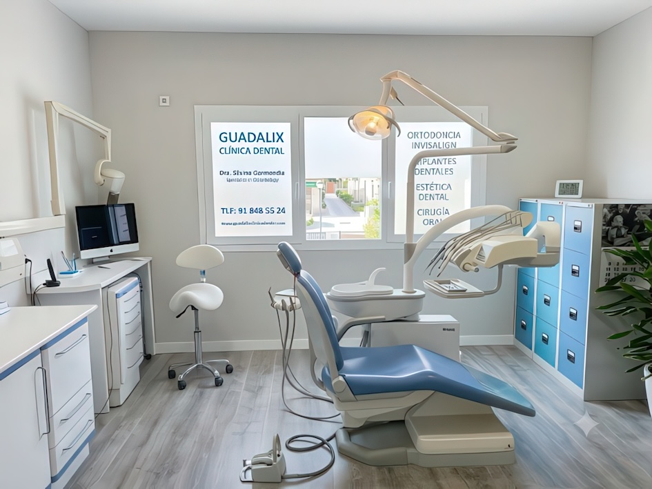
Guadalix Clínica Dental nace con la vocación de ofrecer a los pacientes una atención odontológica especializada y multidisciplinar en el entorno de la Sierra Norte de Madrid.
Contamos con un local completamente reformado, accesible para personas con movilidad reducida, dotado de toda la maquinaria e instrumental necesario para el diagnóstico, tratamiento, desinfección y esterilización con los más altos estándares de calidad.
Moderno e innovador, está pensado para que los pacientes se sientan cómodos y relajados en un entorno que les inspire confianza desde el primer momento.
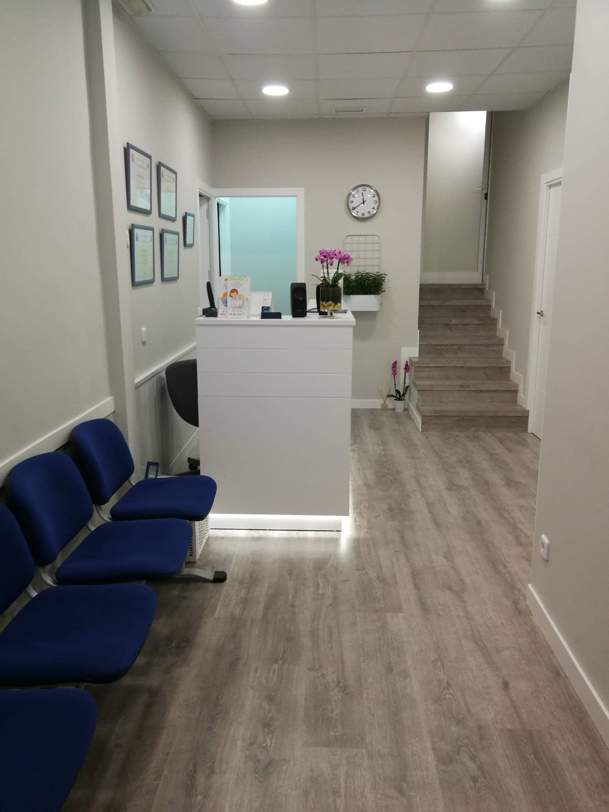
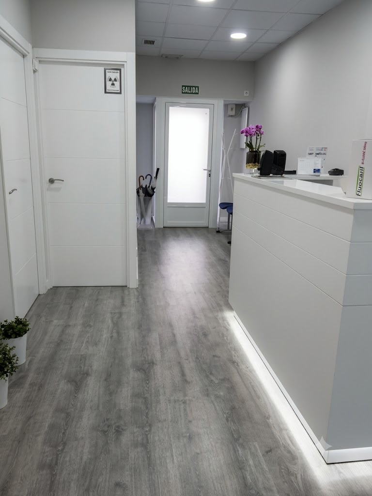
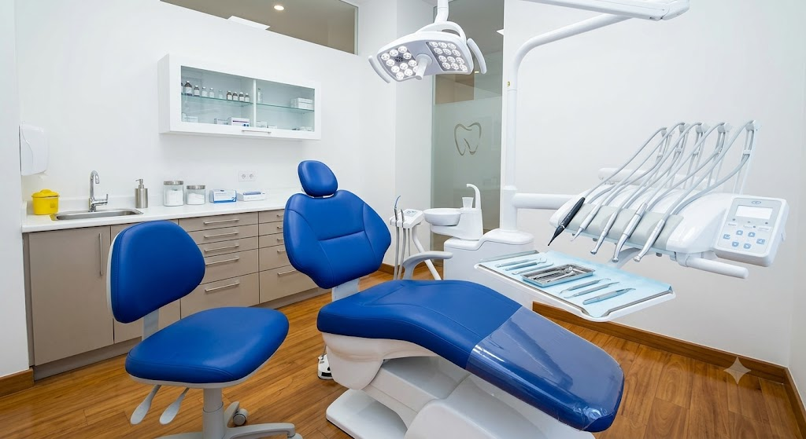
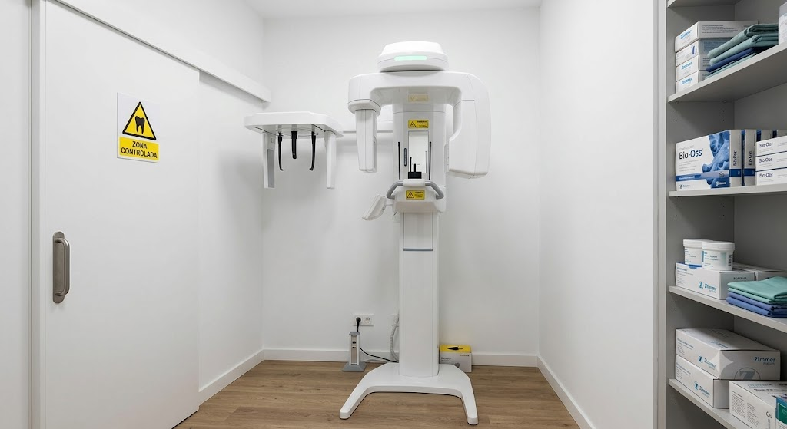
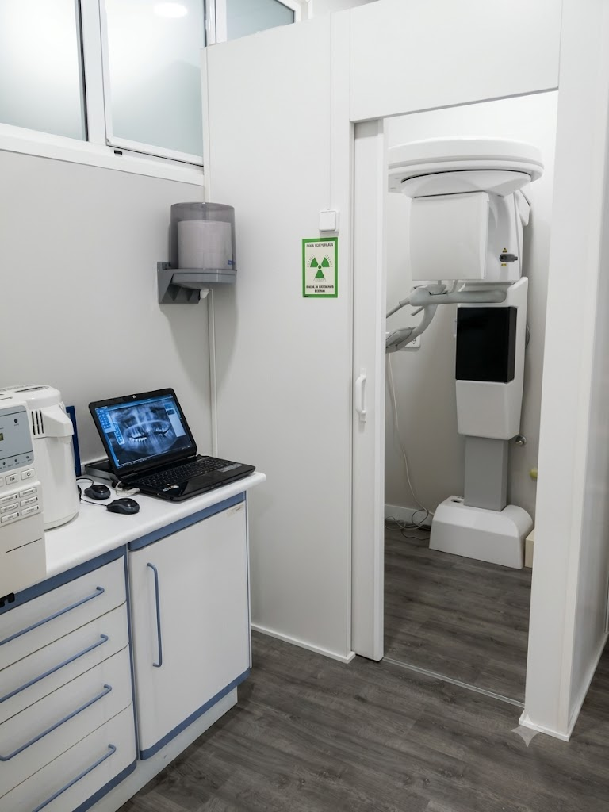
Somos una clínica de referencia en la Sierra Norte de Madrid, comprometida con la excelencia clínica y el trato humano.
Radiografía digital, escáner intraoral 3D y blanqueamiento LED en clínica.
Cada profesional cuenta con formación continua y trato paciente y cercano.
Primera visita de diagnóstico gratuita y financiación flexible sin intereses.
Llevamos tratando a las familias de Guadalix y la comarca durante generaciones.
Cumplimos con todos los requisitos sanitarios del Ministerio de Sanidad.
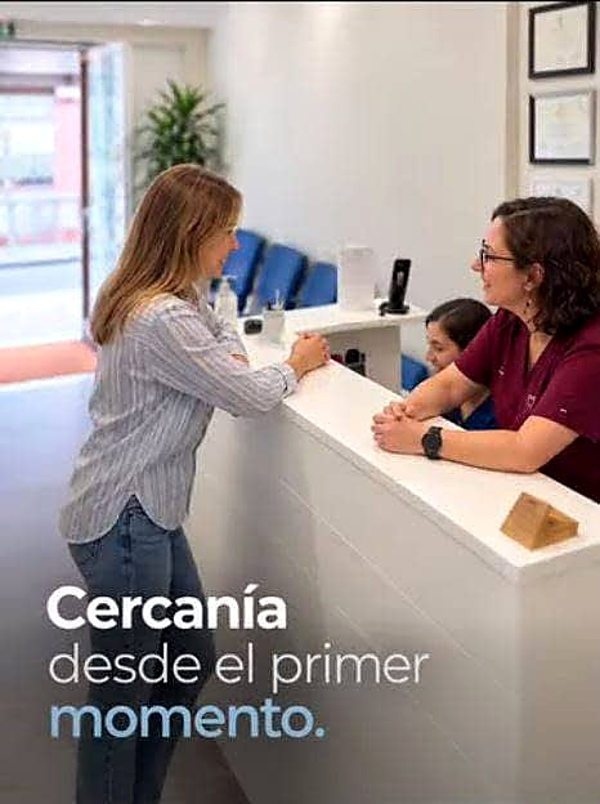
Directoras médicas, especialistas y equipo de apoyo: quién es cada profesional y qué hace en la clínica.
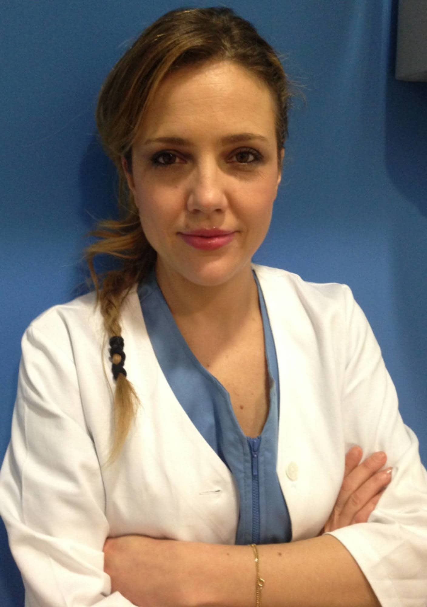
Nº de Colegiado: 28005793
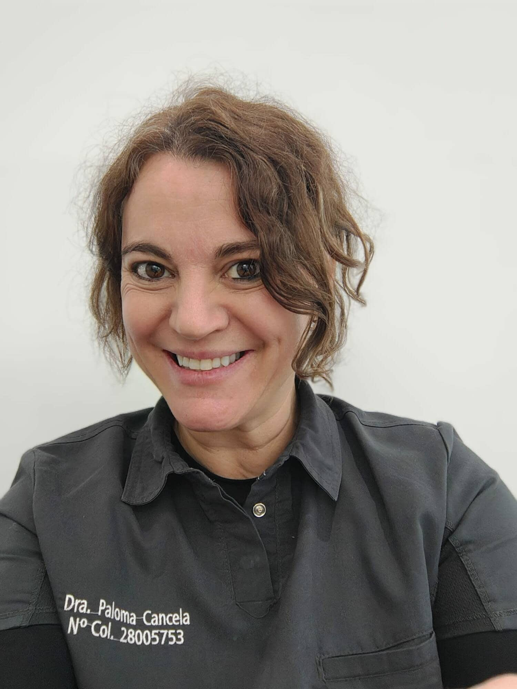
Nº de Colegiado: 28005753
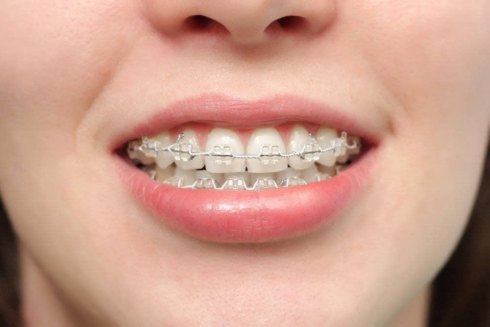
Licenciado en Odontología por la UCM
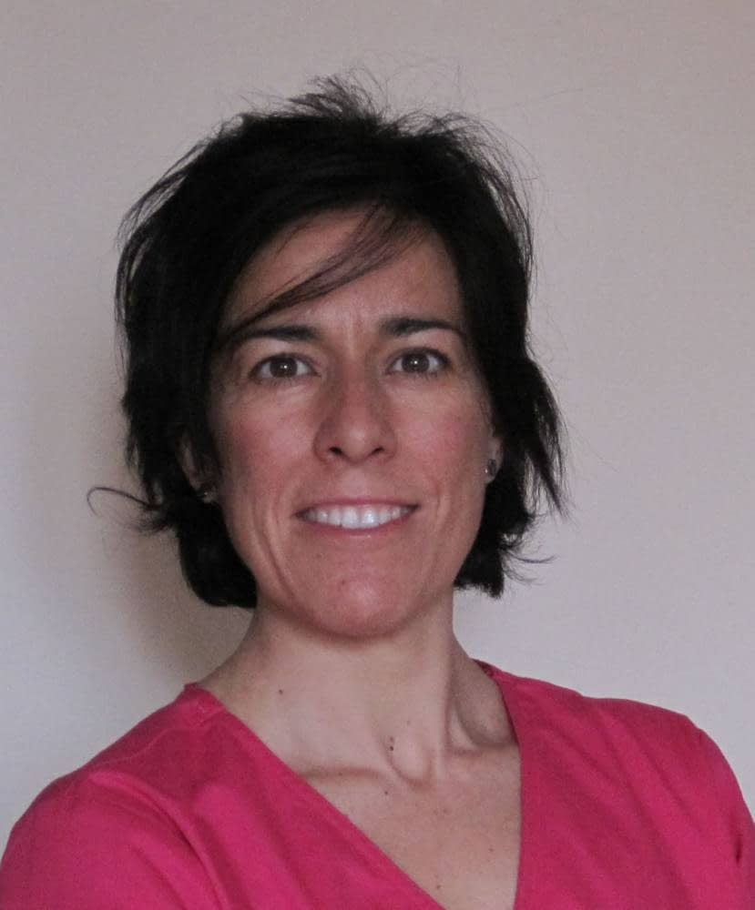
Licenciada en Odontología — UCM, 2001
Especialista en Endodoncia
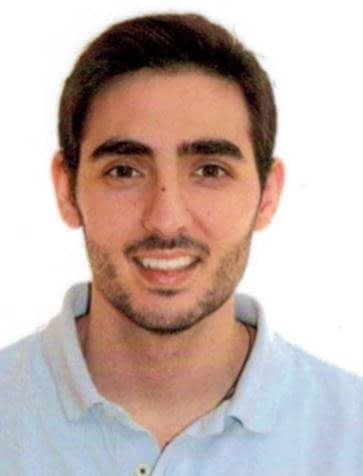
Grado en Odontología — UCM
El equipo de apoyo que hace posible la atención diaria de nuestros pacientes con profesionalidad y calidez.
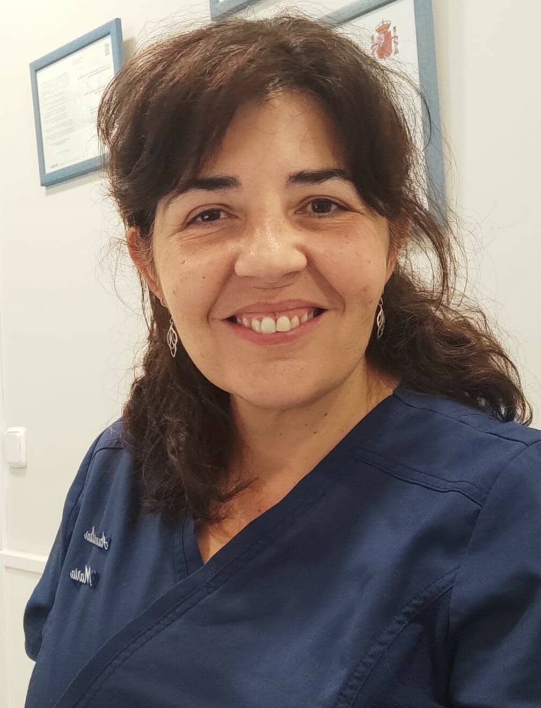
Higienista y Administración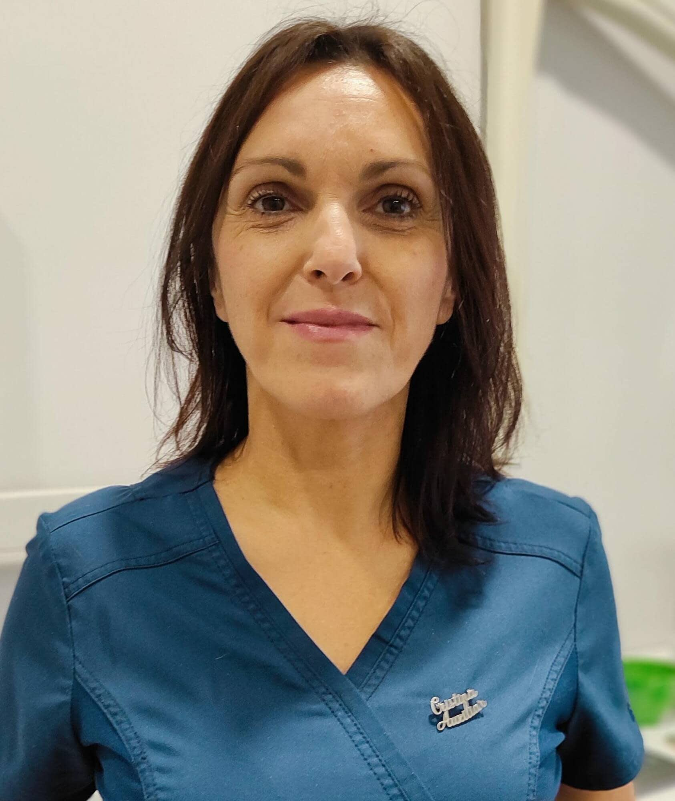
Auxiliar Clínica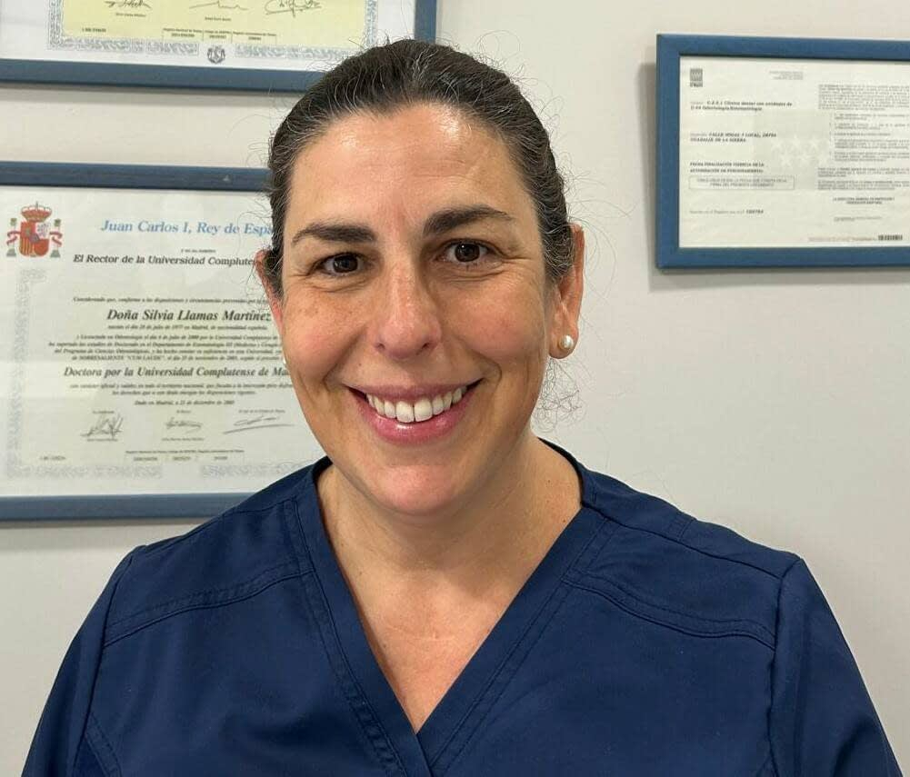
Auxiliar ClínicaQueremos simplificar su estancia en la clínica. Algunos ejemplos:
¿Tiene preguntas acerca de nuestros servicios? No dude en llamar al tlf: 91 847 55 74
Desde revisiones preventivas hasta tratamientos estéticos avanzados, contamos con las últimas tecnologías para cuidar tu salud bucodental.
Brackets metálicos, brackets estéticos y alineadores transparentes (Invisalign). Diseñamos el tratamiento más adecuado para tu caso.
Ver tratamiento →Recupera la función y estética de tus dientes perdidos con implantes de titanio de alta calidad. Resultados naturales y duraderos.
Ver tratamiento →Carillas de porcelana, blanqueamiento dental profesional y diseño de sonrisa. Tu sonrisa perfecta está más cerca de lo que crees.
Ver tratamiento →Tratamiento de conductos con las últimas técnicas para salvar dientes dañados o infectados, eliminando el dolor de forma definitiva.
Ver tratamiento →Diagnóstico y tratamiento de la enfermedad periodontal (piorrea). Protegemos tus encías para mantener una boca sana a largo plazo.
Ver tratamiento →Cuidado dental especializado para los más pequeños desde los primeros dientes. Un primer paso positivo hacia hábitos saludables de por vida.
Ver tratamiento →Limpieza dental profesional para prevenir caries, enfermedad periodontal y halitosis. La base de una boca sana.
Ver tratamiento →Prótesis fija sobre implantes, removible o sobre dientes naturales para recuperar tu masticación, tu estética y tu confianza.
Ver tratamiento →Diagnóstico precoz del cáncer oral y tratamiento de las enfermedades de la mucosa y los tejidos de la boca.
Ver tratamiento →Tratamiento del bruxismo y de la disfunción de la articulación témporo-mandibular con férulas de relajación.
Ver tratamiento →En Guadalix Clínica Dental queremos ponértelo fácil: financiamos todos tus tratamientos dentales.
Queremos que la salud de tu boca no dependa de pagar todo de una vez. Estudiamos tu caso particular y te ofrecemos la financiación que mejor se adapte a tus necesidades.
Pide cita por calendario, por WhatsApp o por voz, como te resulte más cómodo.
Te realizamos una revisión y te preparamos un presupuesto de los tratamientos que necesites.
Estudiamos tu caso particular y te ofrecemos la financiación que mejor se adapte a tus necesidades.
En Guadalix Clínica Dental le ofrecemos un amplio horario de atención para que se adapte a sus necesidades. Para reducir tiempos de espera, rogamos cojan cita previa en el 91 847 55 74.
Directora Médica
Directora Médica
Odontología General
Odontopediatra
Ortodoncista
Endodoncista
Más de 2.500 pacientes confían en nosotros. Sus palabras son el mejor aval.
"Llevaba años con miedo al dentista y aquí me han tratado con una paciencia increíble. El tratamiento de ortodoncia ha cambiado mi vida. El equipo es un 10."
"Me pusieron dos implantes y el proceso fue mucho más sencillo de lo esperado. Sin dolor, con seguimiento constante y un resultado estético espectacular."
"Llevo a mis hijos desde pequeños. Un equipo de verdad familiar, el trato con los niños es excepcional. Nos sentimos como en casa cada vez que venimos."
"El blanqueamiento quedó perfecto. Me explicaron todo el proceso, el resultado duró mucho más de lo que imaginaba. Muy recomendable y muy buen precio."
"Tuve una endodoncia de urgencia y me atendieron el mismo día. Profesionalidad absoluta. Ya no cambio de clínica, aunque me mudé a Madrid capital."
Estamos en Guadalix de la Sierra, a menos de una hora de Madrid. Puedes escribirnos, llamarnos o simplemente pasar por la clínica.
Rellena el formulario y te contactaremos en menos de 24 horas.
Diagnóstico completo, radiografía panorámica y plan de tratamiento personalizado. Sin coste.
Reservar ahora →